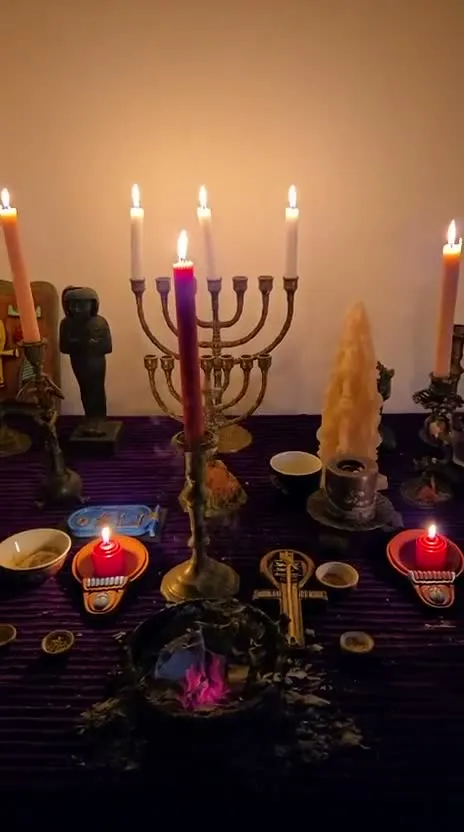

Ritorno della persona amata
Ritorno veloce della persona, anche quando il legame è stato rovinato in forma grave da terzi incomodi.
Italia · Estero · Consulto riservato
Sensitivo · Ritualista · Operatore esoterico
Finché non agisci,
non potrai mai ottenere.
Dai inizio al tuo cambiamento.
Io, Adrian, ti posso aiutare.
ESPERTO IN PROBLEMI D'AMORE

Ti riconosci in una di queste situazioni?
Ci sono blocchi che nessun consiglio riesce a sciogliere.
Sono quelli su cui lavoro da oltre vent’anni.
Ritorno veloce della persona, anche quando il legame è stato rovinato in forma grave da terzi incomodi.
Nuclei familiari che si stanno distruggendo, rapporti con i figli interrotti, case attraversate da tensioni che nessuno sa spiegare.
Stanchezza che non passa, insonnia, sensazione di essere osservati o prosciugati. Quando il corpo sta bene ma qualcosa pesa.
Attività che perdono clienti senza motivo, soci sleali, fortune che si invertono da un mese all’altro.
Affari e investimenti in Italia ed all’estero: letture di opportunità, tempi favorevoli, persone di cui fidarsi.
Immobili fermi da anni, trattative che saltano sempre all’ultimo, acquirenti che spariscono senza spiegazione.
La sua storia
Dicono che sia nato in una notte senza luna, in un villaggio che sulle carte quasi non compare. La nonna lo teneva sveglio fino all’alba e gli insegnava a leggere la cera, il fumo, il modo in cui una fiamma si piega quando in casa entra un pensiero cattivo. Aveva sette anni la prima volta che indicò una porta e disse: «da lì è passata l’invidia». Nessuno rise.
A vent’anni lasciò tutto e attraversò tre continenti. Studiò con anziani che non si facevano fotografare, in stanze dove il tempo si misurava in candele consumate. Riportò a casa un quaderno rilegato a mano, riti antichi che oggi custodisce, e una regola che non ha mai tradito: non si promette mai ciò che non si può ottenere.
«Il destino non è una condanna. È una porta chiusa. E ogni porta chiusa ha una chiave.»
Da oltre vent’anni riceve chi ha già bussato ovunque: uomini d’affari all’ultima trattativa, madri che non riconoscono più i propri figli, donne che chiedono soltanto di poter dormire tranquille. Lavora di notte, con le candele accese e gli specchi coperti, perché dice che è allora che le cose si mostrano per quello che sono davvero.
Non fa spettacolo. Non pubblica volti né nomi. Chi lo ha incontrato lo racconta a un’unica persona alla volta — e di solito quella persona, prima o poi, chiama.
— Maestro Adrian
I lavori del Maestro

Video · 0:25Per legami spezzati da terzi, distanze improvvise, silenzi che durano da mesi. Si lavora sul filo che unisce due persone.
Chiedi informazioni su WhatsAppCome si lavora
Mi racconti il caso al telefono o su WhatsApp. Nessun giudizio, nessuna fretta. Tutto resta tra noi.
Analisi di fattibilità: guardo se e come si può intervenire. Se non c’è nulla su cui lavorare, te lo dico.
Preparo il lavoro su misura, con i tempi e i materiali che il tuo caso richiede. Ti spiego ogni passaggio.
Restiamo in contatto nelle settimane successive. Il lavoro si segue finché la situazione non si è stabilizzata.
 Video · 0:50
Video · 0:50
Chi si è rivolto a lui
★★★★★
«Erano otto mesi di silenzio totale. Il Maestro non mi ha promesso niente, mi ha solo detto cosa avrebbe fatto. Tre settimane dopo il telefono ha squillato.»
★★★★★
«L’azienda perdeva commesse da un anno senza una ragione logica. Dopo il lavoro del Maestro le cose hanno ripreso a muoversi. Io ci credo poco, ma i numeri sono numeri.»
★★★★★
«La casa era invivibile, litigi ogni sera per nulla. Dopo la pulizia si respira. Mio figlio ha ricominciato a parlarmi.»
Domande frequenti
Non si effettuano consulti gratuiti. Viene svolta un'analisi di fattibilità del caso, per capire insieme se e come è possibile intervenire.
Sì. Il Maestro segue casi in tutta Italia ed all'estero, per telefono e su WhatsApp. Non è necessario spostarsi.
Dipende dal caso e da quanto è radicata la situazione. Alcuni lavori mostrano segnali in pochi giorni, altri richiedono settimane. Non vengono mai date date certe.
Sempre. Nessun nome, nessuna storia e nessuna fotografia vengono mai condivisi. La discrezione è parte del lavoro.
Chiami o scrivi su WhatsApp e racconti la situazione con parole tue. Da lì il Maestro ti dice se il caso rientra tra quelli su cui lavora.
No. Alcuni casi vengono rifiutati, altri indirizzati altrove. Non si promette mai ciò che non si può ottenere.
Tutti i giorni, anche la sera. Se il telefono risulta occupato, scrivi su WhatsApp: si risponde in giornata.
Il momento è adesso
Un consulto riservato può cambiare la direzione di tutto.
Dai inizio al tuo cambiamento.
Massima discrezione garantita · Italia ed estero